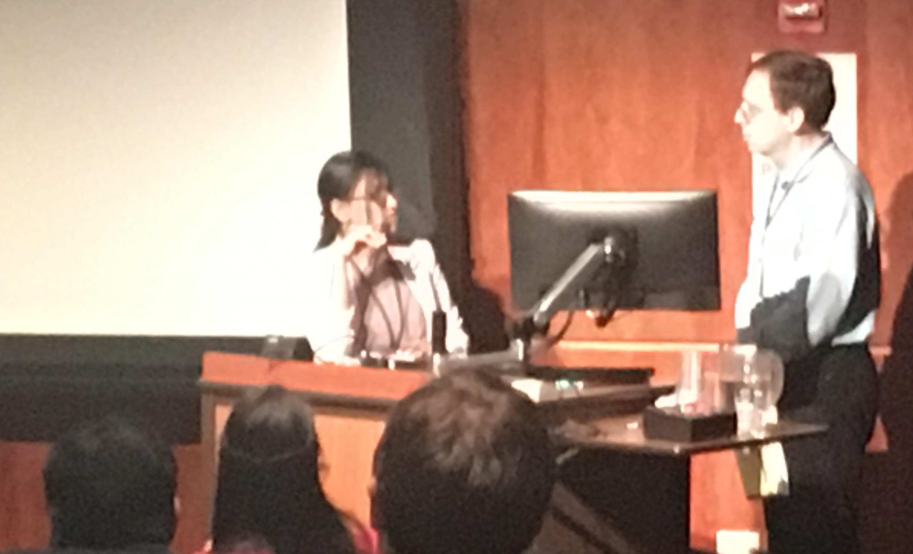
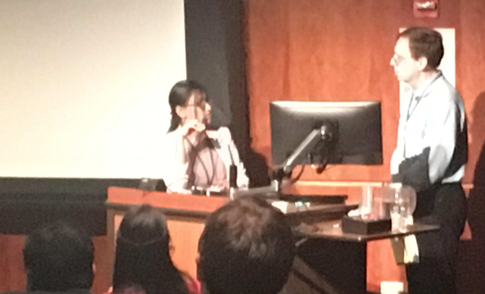
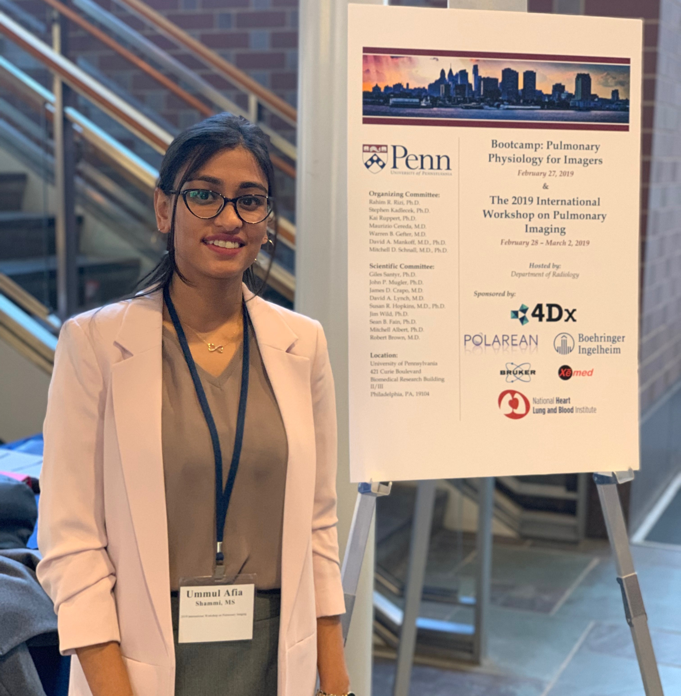
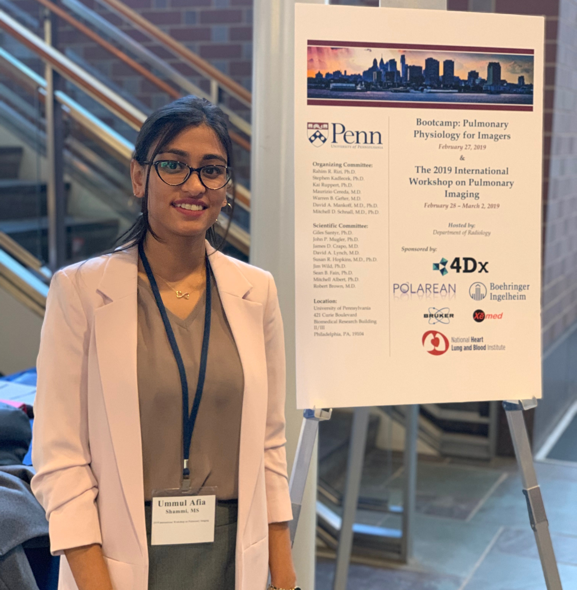
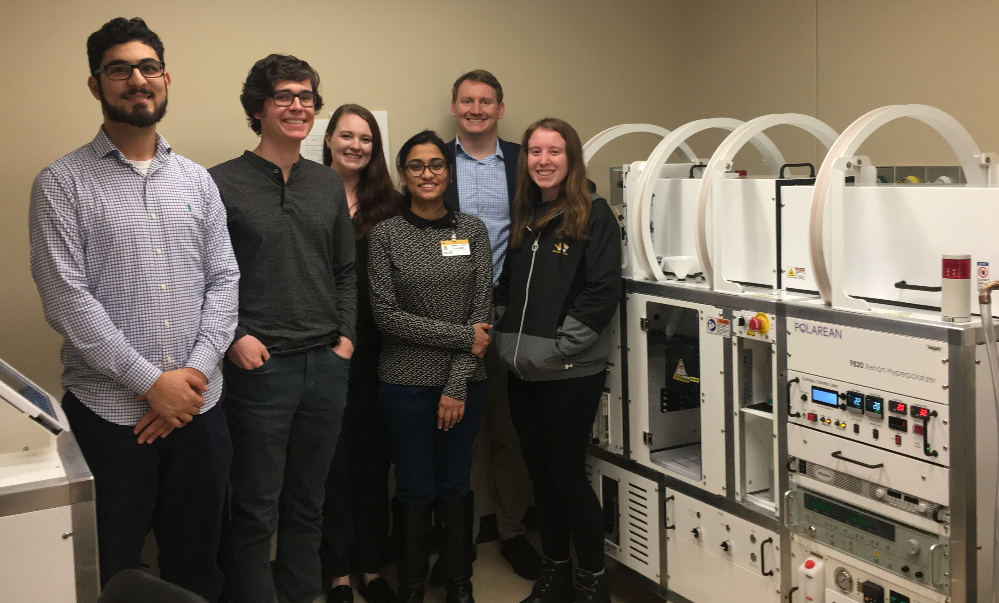
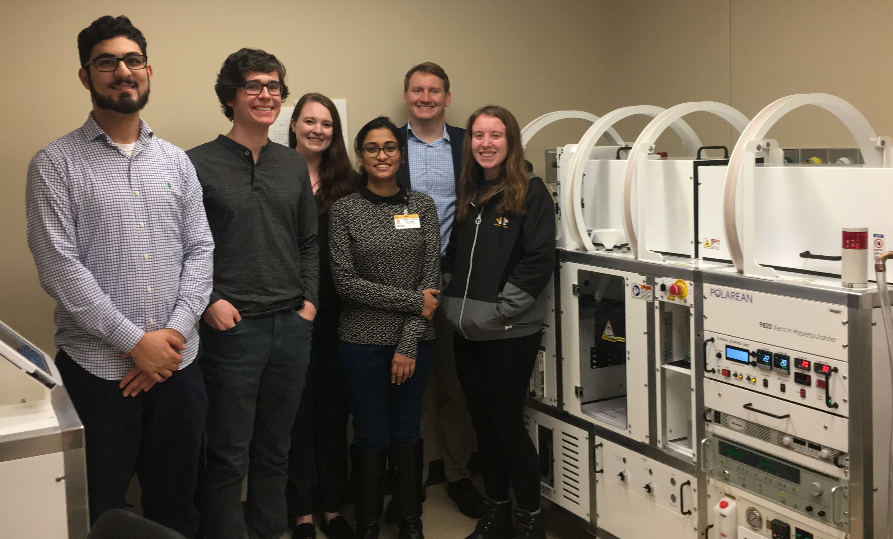

Computer programming and a working knowledge of ubiquitous computer applications are some of the most valuable skills in today's workforce. In particular for medical imaging, the ability to program imaging sequences, perform quantitative analysis of images, and effectively and attractively present a plausible hypothesis with sound data is paramount. Below are listed some of the most commonly-used computer softwares which we employ in the imaging research lab. Learning a new programming language can have a steep learning curve, especially if it's your first language, but it will add great value to your profesional arsenal as well as to the lab.
Programming Languages and Compilers
MatLab - The 'matrix laboratory' is a staple of many labs around the world as it has some of the most powerful packages for dealing with matrices, large datasets, and advanced plotting features. For MU students and faculty, MatLab is available for free via Software Anywhere (which requires VMware Horizon Client), and/or through the Lewis Cluster, although not all packages are available by these means.
R - R is a statistical computing environment which employs a MatLab-like programming syntax. It is most well known for its vast library of statistics function, but it can also be used for image processing. It is free and open-source and is used heavily in the medical imaging lab as a friendly MatLab surrogate. Click here for an introduction to programming with R in the PIRL.
Python - Python is a versatile and syntax-friendly programming language recently ranked as the most popular programming language of 2017. Its versatility as a language led to its implimentation as the choice GPIO communication protocol for the Raspberry PI micro-computers.
Dev C++ - C/C++ are among the most popular open-source programming languages. It has recently usurped assembly languages for programming micro-controllers and prototyping boards due to its minimal real-estate in memory. Dev C++ is an easy-to-use front-end compiler for C/C++ languages. Further, C languages are gradually overtaking assembly and BASIC as the primary programming language for microcontrollers.
Word Processing and Manuscript Preparation
MicroSoft Office - We use the Microsoft Office Suite extensively for our work including Word (doc and docx formats), Excel (xls and cvs formats), Powerpoint (ppt and pptx), and Outlook. Mizzou students can get Office for freehere. ($10 for faculty and staff). Truly no other open source alternative (OpenOffice, LibreOffice, Kingsoft Offce, etc.) can do what Microsoft Office can, and proficiency with MS Office is generally considered non-negotiable skill for nearly every profession. That said, something MS Office does not do very well in my opinion is render equations with an aesthetic, professional quality. For equations, I recommend LaTeX as described below.
EndNote - When writing papers and manuscripts, keeping track of citations and organizing a bibliography is made much easier using EndNote which keeps a library of all works cited and automatically organizes citations within the text.
- LaTeX (pronounced 'LAY-Tek') is a document formatting system based on the TeX typesetting language. See Dr Thomen's Dissertation for an example of a document made using LaTeX. TeX is particularly good at rendering mathematics and equations with professional quality. In order to use LaTeX, you must first download a TeX implementation such as MiKTeX, then a TeX front-end compiler such as TeXworks to write and compile your document. Note: LaTeX is not recommended for documents which you intent to distribute to colleagues for edits/review; stick to MS Word for this. You can also add TeX to powerpoint documents using a powerpoint add-in such as IguanaTeX. In order to use IguanaTeX, you must download/install Ghostscript to interpret the postscript language, and Imagemagick to convert rendered images. If you don't want to install LaTeX locally, but still want to produce LaTeX-quality equations, you can use an online TeX compiler to render equations as images to download/CopyPaste into projects.
Image Viewers and Graphics Editors
ImageJ - ImageJ is a free Java-based image viewer and analysis program developed by Wayne Rasband at the NIH. It is perfect for quick viewing of imaging datasets and simple image analysis. Requires the Java Runtime which can be downloaded here.
GIMP - The GNU Image Manipulation Program is a raster graphics editor - effectively a free, open-source Adobe Photoshop. It is very useful for creating and editing images for aesthetic scientific figures (note: be judicious and careful about altering images for publication as this can be construed as falsification of data if altered images are presented as raw data).
Inkscape - Inkscape is a vector graphis editor - effectively a free, open-source Adobe Illustrator. It is very useful for creating figures and cartoons for papers and presentations. Unlike raster graphics in which image information is recorded pixel-by-pixel, vector graphics are rendered in real-time according to an xml-based script allowing them to be scaled and edited easily without compromising image quality.
Blender - Blender is a free, open-source, python-based 3D animation software. I use blender often to create 3D animated gifs for use in presentations to communicate ideas which cannot be easily drawn in powerpoint or on a blackboard.
SketchUp - Sketchup is a free 3D CAD software which can be used to create 3D models for machining reference or 3D printing.
Audio and Video
VLC Media Player - VLC is a free, open-source video/media player. It supports nearly every video format, is available on all OS platforms and can be used to stream, edit, and convert video and audio.
Cam Studio - In my experience, one of the best ways to teach others how to perform computational tasks is simply to make a tutorial video. Cam Studio allows you to record a video of your computer screen which you can share with others.
Audacity - Although our lab doesn't do much audio processing/sequencing, if/when these needs arise Audacity is a user-friendly multi-track audio editor with numerous effects and analysis algorithms.
Utilities
Box - Cloud-based file storage. All MU students/faculty should have a box account by default. Note that MU prohibits installation of non-Box cloud storage platforms (such as Dropbox) on MU host computers; hence, it is beneficial for students to make Box their default cloud storage.
WinSCP - WinSCP is sn SFPT client for remote and local file transfer.
Teamviewer - Teamviewer is a user-friendly remote desktop connection software.
SyncToy - The importance of data backups cannot be stressed enough. SyncToy is a simple file-syncing utility which can be programmed to run automatically as needed. For computers attached to the MU network however, each users 'My Documents' folder is automatically backed up to the MU mainframe. But it is still advisable to always have data in more than one location.
7zip - This is (imho) the best file compressor/archiver; much more friendly than WinRAR or WinZip.


 

 

 
